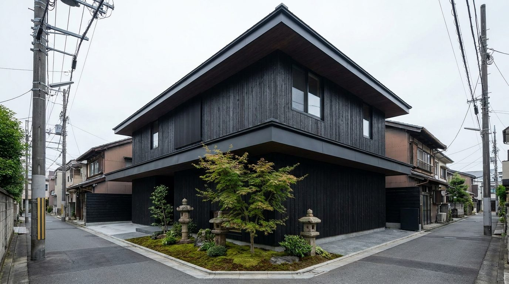
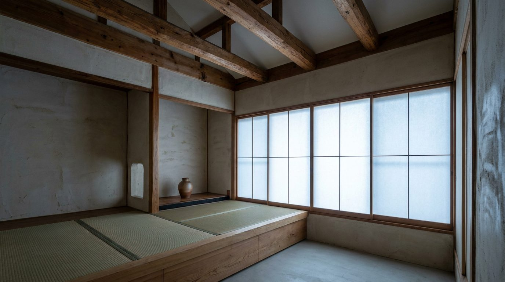

Atlante · INT-JP-01 · Giappone · Asia
Appartamento compatto con travi di cedro a vista e nicchia tokonoma
Esempi · esterno e interno


Perché funziona
Quiet per definizione: tutto sta in 2,45 m di altezza, nella calce tirata a frattazzo e nel cedro oliato, con due soli oggetti. Il valore è la proporzione bassa e il tempo della materia, non la scala né la lucentezza.
Architettura · elementi riproducibili
- soffitto a 2,45 m con travi di cedro a vista 90x90 mm a interasse 450 mm
- tatami 1820x910 mm su pedana rialzata 300 mm
- shoji a 1,80 m in telai di cedro, modulo 900 mm, carta washi
- nicchia tokonoma 900x450 mm con un solo vaso in ceramica
- pareti in calce con inseguimento di frattazzo, nessuna tinteggiatura uniforme
- finestra bassa 1200x1800 mm con davanzale a 400 mm dal tatami
- seduta bassa 320 mm e sgabello in olmo consumato, nessun tavolo alto
Fatto verificato: il lessico delle proporzioni basse e del filtro di carta è documentato dal wabi-sabi come estetica dell'imperfetto, impermanente e incompleto; il Nezu Museum (Kengo Kuma, 2009, tetto unico che lega interno e giardino, ingresso tra i bambù) e il SunnyHills a Minami-Aoyama (Kengo Kuma, giunto ligneo Jigoku Gumi, sezioni 60x60 mm) mostrano la stessa scala domestica a Tokyo.
Valutazione: qui il lusso è la misura, non la materia rara; il rischio in generazione è scivolare nel minimalismo da render, perciò si chiedono travi, giunti e carta visibili.
Registro colore assegnato Color Block in versione tonale: due piani architettonici desaturati (calce, cedro) più il neutro della carta; nessun colore saturo.
Luce
Prompt di generazione (EN)
Compact apartment living room in Tokyo, wabi-sabi register with low proportions, 2.45 m ceiling with exposed oiled cedar beams 90 x 90 mm at 450 mm centres, clay plaster walls with visible trowel marks, tatami floor in 1820 x 910 mm modules on a 300 mm raised platform, 1.80 m shoji screens in cedar frames with warm washi paper, a 900 mm tokonoma alcove holding one unglazed ceramic vessel, only a 320 mm low linen seat and a worn elm stool, raking morning sun from the south-east at 18 degrees across the tatami, deep soft shadow under the beam line, dust visible in the light, 35 mm lens at 1.15 m height, two-point perspective, muted desaturated grade, no people, no text.